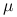
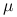
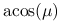
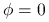
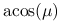
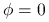

Use this option only together with mc_panorama_view. This
option has been introduced to facilitate e.g. the calculation of
circum solar radiation. Three sub-options are available, sun,
mu, and zenith. When set sun, the camera is
aligned to sun (i.e. using the options sza and
phi0).  and  as given by the option
mc_panorama_view now relates to the sun's position. sets
cosine of the angular distance from the center of the sun.
and  as given by the option
mc_panorama_view now relates to the sun's position. sets
cosine of the angular distance from the center of the sun.  -1
implies looking directly into the sun. With
-1
implies looking directly into the sun. With  we select the
direction around the sun on a circle with angular distance  from the center of the sun.  implies that the
camera pixel is looking in a direction exactly below the sun, at
we select the
direction around the sun on a circle with angular distance  from the center of the sun.  implies that the
camera pixel is looking in a direction exactly below the sun, at
 the camera pixel will be looking exactly above the
sun. Increasing
the camera pixel will be looking exactly above the
sun. Increasing  means the direction of looking moves clock-wise
around the sun-camera-line (seen from the sun). If the sun is in the
zenith, the definition of
means the direction of looking moves clock-wise
around the sun-camera-line (seen from the sun). If the sun is in the
zenith, the definition of  is identical to that in phi.
is identical to that in phi.
The sub-option mu aligns the camera geometry according to the options umu and phi. Be aware that phi0 and phi are defined differently!
The sub-option zenith makes only sense when using mc_spherical 3D. Then the camera is aligned to the zenith with respect to the lon-lat position of the camera.